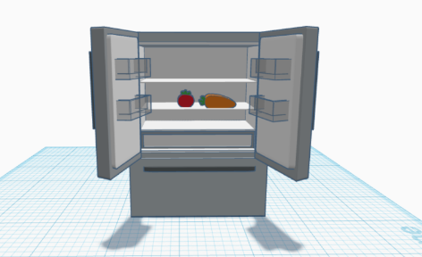
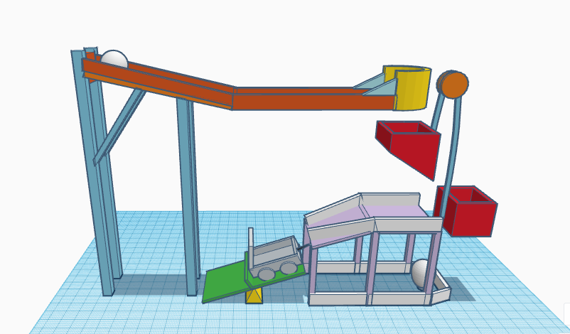

Maddie's Website

8/21-8/24 Week 1
This is my first journal entry. We learned about the engineering process and safety rules. Along with figuring out how to create a website and edit it to our liking.
I have the ability to do this using AWS, GITHUB, and html code. These are all fundamental aspects that allows me to create and edit the text that will be displayed to the website.
These websites will allow me to document all the activities and lessons I have learned in this class.
8/28-8/31 Week 2
This is my second journal entry. This week we were introduced Rude Goldberg machins and tinker cad which is a 3D modeling program. I learned about the
machines that were used back in the day to advance the quality of life. Such as a lever, pulley system, wedge, incline,wheel,and screw. With these simple
mechanics, my table group and I were asked to create a system that pops a balloon, all while having limited supplies. We rough drafted a simple design but
over the week edited it to make it the best it could be.Then we modeled this in tinker cad. Another assignment incorporated with Tinker Cad was
to create a home appliance. I chose to make an open fridge, displaying its containments. Unfortunately, I did not have enough time
to fill it with food like I intended to. We also took an engineering design quiz and worked on our Goldrudeberg machine model in Tinker Cad.

9/5-9/8 Week 3
This is my third journal entry. Prior to last week, we finalized our rude goldberg machine on tinker cad and started manufacturing it with limited materials.
My tablemate, Emma, was in charge of handling our supplies. We started with a large piece of cardboard and drew precise lines to help us cut the same measurements of our tinkercad model.
Cherin, my other tablemate, used a box cutter to cut out the pieces we needed for the incline and railing. At first, while Cherin was cutting, Emma and I just watched
on the side, not doing anything else. In order to speed up production, we decided to all focus on different parts of our machine. This week we weren't able to
start connecting things together but we were able to start cutting some cardboard pieces.

9/11/-9/15 Week 4
This is my fourth journal entry. This week we worked on our rude goldberg machine using carboard and other materials. During the whole
tuesday period all we did was cut and contruct our design. Unfortunately, we were not able to add a pulley machine due to the lack of time.
The next period we had was another working period on our machine.Our first time testing it with a balloon was unsuccessful. The problem was
the baseball wouldn't fall into the cardboard car box.To fix it we adjusted the position of the lever. Once this problem was solved, another error occured.
Even when the ball fell in the car, there was not enough force to push the needle into the ballon. After many adjustements and tinkering,it finally popped.
I think this is because we adjusted the two cars taped to the bottom of the car box. This allowed it to gain more speed and resist friction, thus
creating enough force to pop the balloon. Mission Success.
9/18/-9/21 Week 5
This is my fifth journal entry. This week I took part in a challenge with the goal of creating a paper flotation device that holds weights. In order
to win, your device had to hold the most amount of weight compared to the class for five mnutes. We had limited time so I had to act fast. I cut my paper
into a square so I can make an evenly shaped box. With my extra paper, I folded them and created two hollow cylinders. These were to give the box extra support
when floating. I put 106 grams of weight in my box and it was able to stay afloat for 5 times.
9/24/-9/28 Week 6
This is my sixth journal entry. This week I took apart a PC with my groupmates. And once we correctly dismantled all the parts, we then
put it back together. During this process I learned about the location and functions of the necessary parts of a PC. Such as the motherboard, CPU,
RAM, heat sink, GPU, etc. After that we took a quiz about the intro to engineering and the main functions of a computer.